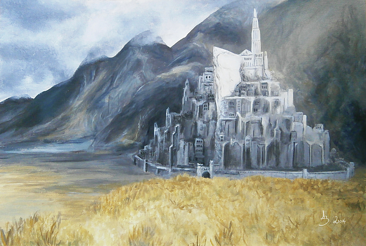
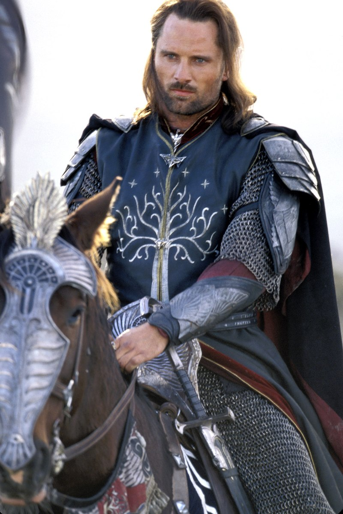

Столиця Мінастіріт

- Історія
- Наприкінці Другої Епохи, після падіння Нуменора і порятунку Вірних Нуменорців на чолі з Еленділом, кораблі синів Еленділа Ісілдура і Анаріона занесло на південь біля гирла Великої Річки Андуін. Піднявшись угору течією річки, вони заснували володіння, що згодом отримало назву Гондор (Кам'яна Земля). Столицею Королівства стало місто Осгіліат на обох берегах Андуіну, з'єднане великим мостом з вежами та кам'яними будинками. Обабіч столиці стояли дві твердині: Мінас-Ітіль (Вежа Східного Місяця) на схилі Гір Тіні як погроза Мордору та Мінас-Анор (Вежа Спадного Сонця) біля підніжжя Бескиду Міндоллуін як захист від дикунів долин
Король Гондору
- Король Арагорн
- Після закінчення Війни Персня, Араґорн коронувався в Ґондорі і став королем Возз'єднаного королівства Арнора і Ґондора — 1 травня 3019 року, і прийняв ім'я Елессар (Ельфійський самоцвіт). Це ім'я йому пророкували під час народження, зелений дорогоцінний камінь із такою назвою подарувала йому Ґаладріель, коли члени Братства Персня були в Лоріені, і через цей камінь так назвав його народ, коли він прийшов до Ґондора. В часи його мандрівок, жителі Брі назвали його «Блукачем», та, вступивши на престол, він дав своєму дому ім'я «Тельконтар» — квенійський еквівалент свого прізвиська. 25 червня 3019 р. Араґорн, за допомогою Ґендальфа, знайшов на схилах гори Міндоллуїн паросток Білого Дерева. А в день літнього сонцестояння цього ж року Арвен прибула до Ґондору, і вони з Араґорном справили весілля. Шлюб їх став третім союзом елдар і едайн. У них народився син Елдаріон і доньки — оскільки тоді лінії Трьох королів елдар (Інґве, Фінве й Ольве з Ельве) з'єдналися, а Лютіен була найпрекраснійшою з дітей Еру, нащадків цього шлюбу називали «діти Лютіен».
